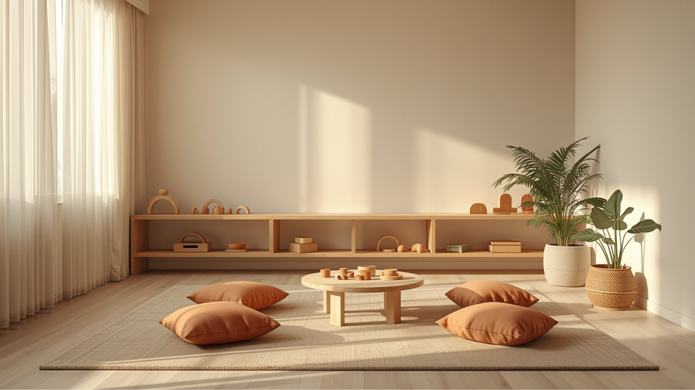

Öne Çıkan Yazı
Çocuklarda ve Ailelerde
Çocuklarda ve Ailelerde
Yeni Başlangıçlar
Okul, kardeş, taşınma, yeni bir düzen… Çocuklar için her yeni başlangıç aynı zamanda bir vedadır. Uyum sürecinde çocuğun yanında nasıl durulur?